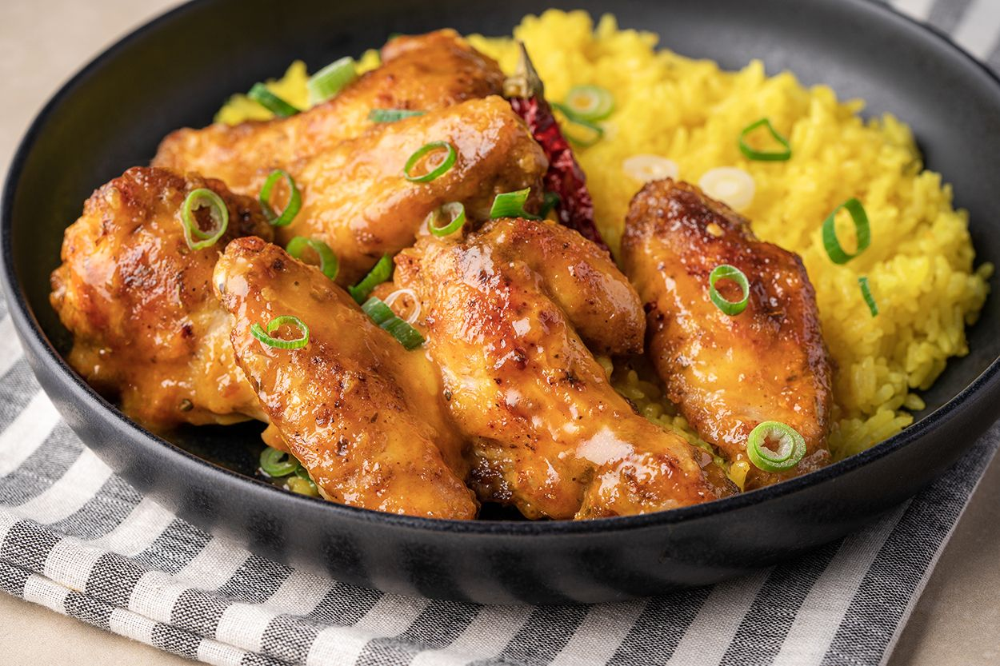

Sporcular ve diyettekiler için mükemmel tavuk pilav tarifi.
Tarif: Gökhan B. Ersoy
1 Kişilik.
Malzemeler:
- Pirinç 150gr.
- Tavuk Göğüsü 300gr.
- Zeytinyağı
Yapılış:
- İlk önce pirinçleri yıkayıp ıslayalım.
- Tavukları küp küp doğrayıp tavaya atalım.
- Islanmış piirnçleri süzüp tencerede yağda kavuralım, kavurulurken zerdeçal ve tuz ile 2 3 defa çevirelim.
- Kaynamış suyu üstünü geçene kadar pirinçe ekleyelim.
- Suyunu çeken tavukları yağ ve baharatlarla çevirip altını kapatalım.
- suyunu çeken pirinç pialvınıda kapatıp dinlenmeye bırakalım.
- Yemeğimiz hazır, afiyet olsun.
